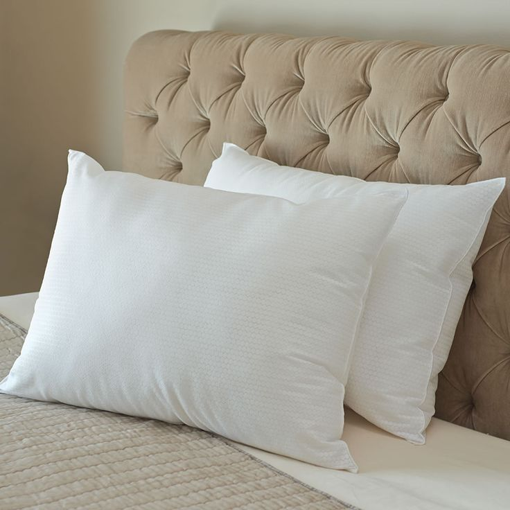
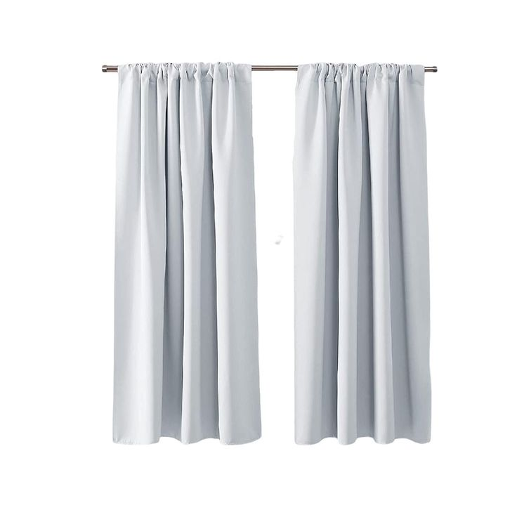
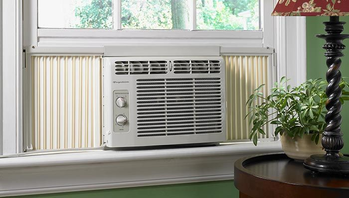
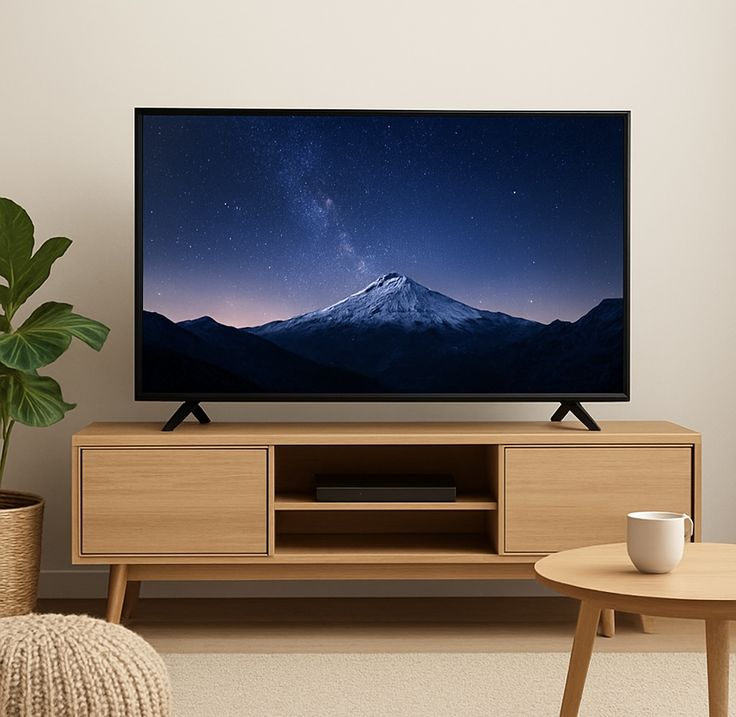

Using e-WASH to clean furniture and other items makes removing dirt easy.
Furthermore, its antibacterial and deodorizing properties allow you to safely address unpleasant odors and invisible dirt without using separate disinfectants or deodorizers.


TABLE
Spray it on
Spray e-WASH evenly onto the soiled area.
Wipe with a dry cloth
If the stain is severe, it is effective to wait several tens of seconds before wiping it with a dry cloth.
FABRIC
Spray it on
From a short distance away, spray e-WASH evenly from top to bottom. It's odorless and non-sticky, so it provides refreshing deodorization.
Wipe away dirt
If there is any dirt, wipe it off with a towel sprayed with e-WASH.


CURTAIN
Spray
Spray e-WASH evenly from top to bottom, from a short distance away from the curtains. This will also prevent mold from growing due to condensation.
WINDOWS AND SCREENS
Spray directly onto windows
Spray e-WASH onto the window and wipe it with a dry cloth. The fog will be removed.
Position the cloth
To clean the screen door, first place a cloth on the opposite side and spray e-WASH onto it.
Wipe by cupping hands
Once dampened with e-WASH, hold a cloth in each hand and wipe away the dirt by squeezing it between your hands.


FLOOR
Dilute e-WASH
Since it will remove the wax from the flooring, dilute it to more than 10 times its original concentration.
Spray it on
Spray diluted e-WASH onto the floor and wipe away the loosened dirt.
AIR CONDITIONER
Wash the filter
Remove the filter from the main unit, spray e-WASH directly onto it, and rinse away the loosened dirt with tap water. Allow it to dry completely in the shade before reattaching it.
Spray onto the unit
For dirt on the main unit, spray e-WASH directly onto the surface and wipe away.


TV SET
Spray onto a cloth
Beforehand, wipe the appliance itself with a cloth soaked in e-WASH to remove any dirt.
Wipe with a dry cloth
Wipe away any moisture from TV and computer screens with a dry cloth to avoid leaving streaks.
Remote control
Spray it directly onto the remote control and wipe away any small imperfections.